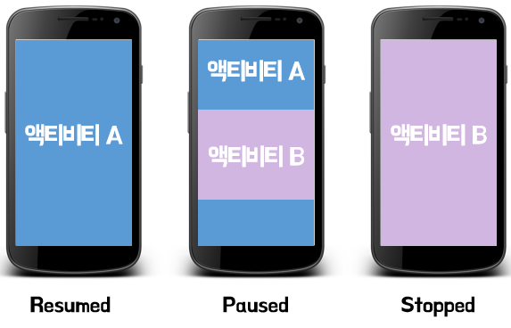

액티비티의 상태
안드로이드의 액티비티에는 3가지의 상태를 가지고 있다. 그 상태들에서 잠깐 알아보자.  위의 그림에 있는 설명은 액티비티 A의 상태를 나타낸 설명이다.
- 재개됨(Resumed) 액티비티가 화면 맨 앞에 있고(맨 위에 있고, 포그라운드에 있고) 사용자의 포커스를 가지고 있는 상태를 말한다. ("실행 중"이라고 말할 때도 있다.)
- 일시정지됨(Paused) 다른 액티비티가 맨 앞에 있고 사용자의 포커스를 가지고 있지만, 현재 액티비티도 여전히 표시되어 있는 상태를 말한다. 위의 그림중 가운데 그림에 해당된다.
- 정지됨(Stopped) 다른 액티비티에 의해 화면에서 완전히 가려진 상태를 말한다.(액티비티가 이제 '백그라운드'에 위치한다.) 하지만 정지 상태의 액티비티 역시 아직 살아있기는 마찬가지이다.(메모리에 보관되어 있음)하지만 일시정지 상태와 다르게 창 관리자에 붙어있지는 않다. 정지 상태의 액티비티 역시 시스템에 의해 메모리에서 중단될 수 있다.
쉽게 말해서 조금이라도 화면에 보이면 그 액티비티는 일시정지 상태라고 할 수 있다.
일시 정지된 액티비티는 완전히 살아 있다. 살아 있다는 말은 Activity 객체가 메모리에 보관되어 있고, 모든 상태 및 멤버 정보를 유지하며, 창 관리자에 붙어있는 상태로 유지되어 있다는 것을 말한다.
하지만 메모리가 부족한 경우 시스템에 의해 중단될 수 있다. 중단된 말은 Activity 객체가 메모리에서 사라진다는 말이며, 가지고 있던 모든 정보가 날라간다는 뜻을 의미한다.
때문에 일시 정지 상태가 되면 액티비티의 상태를 따로 저장해 두는 것이 좋다.
안드로이드의 액티비티에는 위와 같은 상태가 존재하며 상태의 전화에 따른 수명 주기 콜백 메소드가 존재한다. 이제 그것에 대해서 알아보겠다.